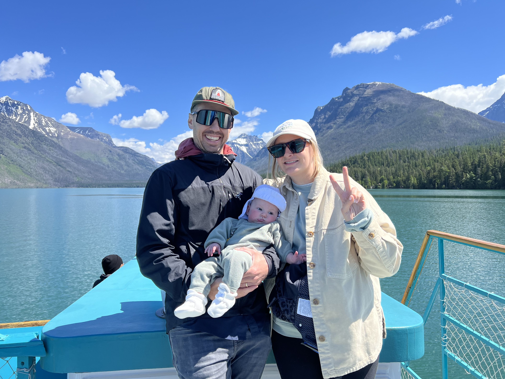

More About Me
I have always been an adventurer. After completing university at CU Boulder with a bachelors degree in both Communication and Philosophy I moved to Aspen, CO to live out my dream as a skier and mountaineer.
I spent 20 years in the restaurant industry to support my mountain lifestyle. I loved the fast paced, think-on-your-toes, heavy social interaction of working in the restaurant environment. I could work in the evenings and had a very flexible schedule. I was very successful at each of the restaurants I worked for and really appreciate the time I spent in the industry.
As I grew older my priorities shifted from the mountains to my family and I began to consider a more sustainable career. I wanted a new challenge that was mentally stimulating and less physically demanding. I have been interested in coding since I was young and have always had a knack for tech. I want to contribute to an increasingly digital future and love the idea of building things from scratch. Actualize has lit a fire inside me and given me the tools I need to begin my path as a developer. I have fully embraced the growth mindset and am ready to make my mark!

Family is my motivation
I am so blessed to have such an amazing and supportive wife. Our first child, baby Olive, was born in February and fatherhood has been the most rewarding experience of my life. These two gals are my world and inspire me to be the best I can be!

I love the mountains
There is nothing better than being deep in the wilderness. I love to ski and climb and have an irresistible attraction to beautiful landscapes. It's so fulfulling to work together with your partners to accomplish a sought-after mountaineering objective.
Did I mention Curry?
Curry is our hilarious miniature dachshund. He's a mountain weenie who is up for anything. His legs may be small but his energy is endless. He is mostly a good boy but can sometimes be a wild and crazy maniac. He plays by his own rules!